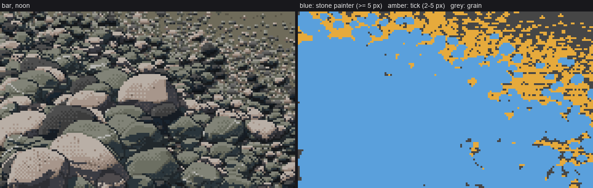
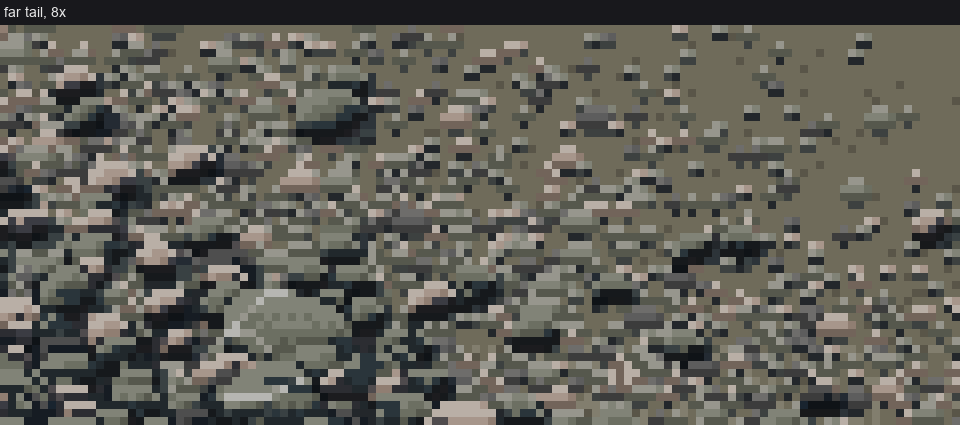

4. Small stones: lozenge, tick, grain
← form before paint · front page · next: pockets, not outlines →
When: any stone under about 9 px, and any surface where stones shrink with distance until they are smaller than a pixel.
The dithered painter from page 2 needs room. A Bayer 2×2 checker and a three-band crescent can't fit on a 6 px stone, and what comes out is mush. Below that size the stone has to become a mark, and the mark changes class twice more as it shrinks. The trick is that each class hands off to the next with no pop.

Which mark paints each pixel of a bar. Blue: the full stone painter (5 px and up). Amber: the tick stamp (2–5 px). Grey: the grain matrix (below 2 px), which shows only where no stone or tick covers it.
Under 9 px: Ferrari's shore-stone lozenge
Ferrari's stones at the dusk tarn's shore are three or four flat values, with no dither at all: a light top row, a mid body and a dark bottom row, with the ends clipped at 45°.

Ferrari's shore stones (the tarn at dusk), from the analysis student's study.
In paint_stone, a stone narrower than small=9 px skips the dither and quantises to flat classes:
if size < P.get('small', 9):
# small stones (Ferrari's shore lozenges): 3-4 FLAT values, no dither -- light top row,
# mid body, dark bottom row; the shadow side one flat shadow step
xq = np.where(s > np.percentile(sm, 60), 3, 2) # FL on the sunward 40%, else FD
xq = np.where(s < ta, 1, xq) # TURN where it turns away
xq = np.where(e_up == 0, np.maximum(xq, 3 if size >= 4 else 2), xq) # light top row
xq = np.where(e_dn == 0, 0, xq) # dark bottom row
v = np.asarray(classes)[xq]
vs = np.where(e_dn == 0, shadow_classes[0], shadow_classes[2])
v = np.where(lit | (e_up == 0), v, vs)
out[m] = v[m]
return v
Leave out the contact line below 9 px too (if D >= 9: contact_under(out, m)): at that size the stone's own dark bottom row is the contact.

nb055. 10, 6 and 4 px under four suns. The 6 and 4 px stones read as pebbles. The 10 px one, just above the switch, still reads as a little hat: a light cap on a hard dark base. I never fully fixed it, so treat 9–11 px as the size to check by eye.
2–5 px: the tick stamp (bar.tick_stamp)
In a bar, stones between 2 and 5 px don't go through the painter at all. They are stamped as rows:
def tick_stamp(cv, x, y, D, rock, sun_left, rng):
"""a 2-4 px stone: rows [light top] [mid/dark body] [dark bottom], ends clipped at 45 deg."""
w = max(2, int(round(D)))
h = max(1, int(round(D * 0.6)))
x0 = int(round(x - w / 2)); y0 = int(round(y - h))
for r in range(h + 1):
for c in range(w):
if (r == 0 or r == h) and (c == 0 or c == w - 1) and w >= 3:
continue # 45-degree ends
...
if r == 0:
st = FL
elif r == h:
st = SH_DARK if rng.random() < 0.5 else SH_LIGHT # the pocket under the tick
cv.step[Y, X] = st; cv.mat[Y, X] = -1
continue
else:
st = FD if r < h - 1 else EDGE
# the side away from the sun turns
if (c == w - 1 and sun_left) or (c == 0 and not sun_left):
st = min(st, TURN) if r > 0 else FD
cv.step[Y, X] = st
cv.mat[Y, X] = ROCK_IDS[rock]
This is the analysis student's "two values in a single stroke": the contrast lives inside the mark.
Under 2 px: grain, and the matrix is dark
Below 2 px, a stone isn't drawn at all. The surface under everything is a stipple of adjacent steps (bar.grain_fill). Each lit grain pixel gets a darker pixel under it, and the contrast falls with distance:
def grain_fill(cv, region, contrast, lit_share, rng, shadow=None):
r = rng.random((H, W))
# clumpy (2x1 pebbles read better than white noise): light pixel with a dark one below
light = r < lit_share
dark = shift(light, 0, 1) & ~light & (rng.random((H, W)) < contrast)
# the matrix of a clast-supported bar is mostly VOID between grains: dark, with lit grain tops
mid = np.where(contrast > 0.5, EDGE, TURN)
lo = np.where(contrast > 0.5, SH_LIGHT, EDGE)
hi = np.where(contrast > 0.3, FD, TURN)
st = np.where(light, hi, np.where(dark, lo, mid))
In bar(), contrast is a function of the row's scale: contrast = np.clip((scale(yy) - px_per_m_far) / 60.0, 0.15, 1). Near, it's a full light-over-dark pair. Far, it's two adjacent steps, and finally nearly flat.
The trap that taught me the matrix

nb068. The far end of my first bar at 8×: ticks on light tan sand. It reads as a beach with stones sprinkled on it, and the stones pop against the sand.
On a real gravel bar, what's between the clasts is void: dark gaps with lit grain tops. Once I made the base of the grain stipple the stones' EDGE value, and made the ground ramp the average of the rocks, the ticks and grains merged into one mass. The hand-off stopped showing, because a tick is now "a lit top over a dark pixel" on a ground that is itself "lit tops over dark pixels".

After, at 8×: the far tail of the bar. In the middle distance (left half) ticks and grain are one texture. It isn't fully solved, though. In the farthest rows (top right) the grain contrast falls to its floor and the stipple goes flat TURN, which is lighter than the stones' tops, so it still reads a little like sand. I'd fade the far matrix toward the stones' mean value instead of toward flat TURN. I didn't get to it.
The whole ladder at once

40 → 2.5 px per median stone, left to right. Every column uses the same code. Only the scale changes, and the mark classes follow it.
Checks
- Look at the columns where the median stone is 5 and 2.5 px. If you can see a boundary between "stones" and "texture", the matrix value is wrong.
- Look at the 10 px stones on their own. If they look like hats, raise
smallfor that scene or lower the pitch. I didn't find a clean fix.